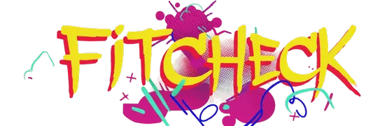

hi i'm jayadithya
AI / ML Systems Engineer
I build production AI systems bottom-up: custom BPE tokenizers in Rust, MLIR compiler optimization passes, local SLM inference under 15ms, and verifiable RAG pipelines.
Built for engineering teams and AI startups that need high-throughput data processing, on-device model efficiency, and zero hallucinated metrics.
chennai, india · open to remote and relocation · rjayadithya11@gmail.com
the t-shaped engineer
broad across the bar. deep down the stem.
engineering depth
four technical pillars backed by production code, peer-reviewed research, and measured benchmarks.
Model Distillation & LoRA Tuning
- • Distilled 8B VLM to 2B student (Qwen3-VL) saving 3.1x VRAM at 92% quality.
- • Contrastive LoRA on 416 real pre/post-fix diffs (Liquid AI d1-3B hybrid SSM).
- • Speculative decoding on dual T4s (0.5567 draft acceptance, 8.11s TTFT).
MLIR Passes & Rust Concurrency
- • MLIR tensor operator fusion lowering to LLVM IR, cutting launch overhead ~20%.
- • Rust BPE tokenizer with rayon parallel merges and Aho-Corasick automaton.
- • Chunked base36 framing with CRC32 verification over standard SMS payloads.
Distributed Workers & Streaming
- • 27-key worker pool with dynamic reset-header parsing across 1.18M chunks.
- • Dockerized FastAPI control plane for Kaggle sweeps with WebSocket logs.
- • Native Android Kotlin ContentObserver detecting inbound SMS in <100ms.
Empirical Benchmarks & Guards
- • First-author IEEE study with 297 blind human ratings over 100 images (p < 0.05).
- • AST statement anchoring lifting within-rule exploitability AUC to 0.6594.
- • Deterministic crisis engine tested against 1,170 CSSR-S Reddit benchmark posts.
featured work
every project below breaks down the problem, tradeoff, and architecture. For projects using AI models, it also explains why an AI model was strictly required.
tamil tokenizer
- problem
- General subword tokenizers (mBERT, Llama-3) fragment agglutinative Tamil into arbitrary byte shards, tripling sequence length, blowing KV-cache budgets, and corrupting 52% of Latin-1 decodes.
- tradeoff
- Writing a custom BPE training engine in Rust gained raw training speed, but required engineering merge tracking, CSR matrix indexing, and Hugging Face export tooling from scratch.
- solution
- 1,135-token base vocabulary around Tamil conjunct stems, Aho-Corasick parallel merges with rayon, and CSR indexing. Achieved 0.9193 bits/byte on Tamil wiki (36.9% better than mBERT) with 100% decode fidelity.
triagemate
- problem
- Static analysis tools like Semgrep generate hundreds of unranked alerts per codebase, burying exploitable security vulnerabilities beneath low-priority warnings.
- why ai
- Static AST rules lack execution semantic context. Determining whether tainted user input can trigger an exploit requires reasoning over commit diffs, sanitizers, and control flow.
- tradeoff
- Fine-tuning on 416 real pre/post-fix diffs prevented synthetic benchmark collapse, but required statement anchoring to align unnumbered AST code snippets with line alerts.
- solution
- Fine-tuned Liquid AI d1-3B hybrid SSM with contrastive LoRA to rank alert exploitability in 12-14 ms on an Nvidia T4. Reached 0.6594 within-rule AUC and 0.8000 on Vul4J real CVEs.
kaggle automation
- problem
- Long-running GPU batch jobs hit Kaggle's 12-hour session limit or crash mid-sweep, exhausting weekly GPU quotas and dropping unsaved checkpoints.
- tradeoff
- Streaming multi-gigabyte zip outputs directly to disk without memory buffers kept container footprints low, but required strict 5-minute pre-flight validation guards.
- solution
- Dockerized FastAPI control plane sharding sweeps across GPU/TPU kernels, sending Telegram alerts at the 11-hour mark and streaming logs over WebSockets. 0 quota failures across 220+ production runs.

fitcheck
- problem
- Multimodal outfit recommendation models require heavy cloud GPUs, but uploading personal wardrobe photos violates user privacy and fails without internet access.
- why ai
- Aesthetic harmony, color theory, seasonal weather compatibility, and cultural styling cannot be encoded in rigid if/else trees; they require vision-language embeddings to score visual cohesion.
- tradeoff
- Distilling an 8B vision-language teacher into an on-device 2B student saved 3.1x VRAM, but required 28K LoRA steps across 538K caption-QA pairs to preserve 92% scoring quality.
- solution
- Offline-first React Native Android app with local SQLite, Open-Meteo weather scoring, and on-device GGUF inference via LM Studio. Validated in a blind human study (297 ratings, r=0.303, p<0.05) and published in IEEE TQCEBT 2026.
sivabharani comments
- problem
- Locating specific community discussions across 1,400+ Tamil tech videos (1.18M transcript chunks) required scrubbing through hundreds of hours of raw audio.
- why ai
- YouTube transcripts feature Tanglish (Tamil spoken in English script), conversational digressions, and colloquial name mentions that standard regex and named-entity recognizers fail to parse.
- tradeoff
- Relying on free-tier Groq API instances kept compute costs at zero, but demanded a custom 27-key worker pool with dynamic rate-limit header parsing across 1.18M chunks.
- solution
- Distributed extraction pipeline with 65-second overlapping conversational windows. Micro-chunk timestamp pinning maps extracted commenter names to exact video seconds, indexed in Meilisearch.
txt
- problem
- Critical financial payments, QR codes, and GPS coordinates cannot be transmitted in rural or disaster zones when cellular data and Wi-Fi networks fail completely.
- tradeoff
- GSM-7 SMS enforces a strict 153-character payload limit, requiring aggressive grayscale posterization down to 1.2 KB instead of transmitting full-color imagery.
- solution
- Offline React Native Android app serializing photos, QR codes, and UPI requests into chunked base36 packets with CRC32 verification over SMS. Native Kotlin module detects arrivals in <100ms.
no projects found in this category... yet!
where i've been
compiler engineering, formal research, and peer-reviewed evaluation.
AI Research Intern
07/2025 - 10/2025Blubridge Technologies · Chennai, India
- Implemented operator-fusion passes in MLIR for custom tensor dialect, cutting kernel launch overhead by ~20%.
- Lowered dialect operations down to LLVM IR with shape inference and bufferization for dynamic tensors.
- Hardened pass pipeline with 40+ lit tests wired directly into CI.
First Author, IEEE TQCEBT 2026
2026"FitCheck: A Multi-Modular AI Framework for Cross-Cultural Fashion Recommendation via Black-Box Data Distillation" · Pune, India
B.Tech, Artificial Intelligence and Data Science
2026Dr. M.G.R. Educational and Research Institute · Chennai · GPA: 8.0 / 10.0
where i commit
stats, languages, and streak - pixel cards redrawn straight from the GitHub API daily.


what happens next?
I am available for full-time AI/ML engineering roles, LLM systems development, and compiler or inference optimization. If your team needs production pipelines with measured latency and zero hand-waving, here is how we start:
Direct Email
Send a message directly to my primary inbox. I review inquiries personally and reply within 24 hours.
1-Page Resume
Download the latest ATS-compliant resume with verified metrics, compiler passes, and IEEE publication details.
GitHub & Hugging Face
Review open-source codebases, test suites, Docker configs, and published model weights with decode assertions.